Cada año, durante la Semana Santa, los habitantes del Barrio de Tierras Negras en Celaya, Guanajuato, realizan una representación comunitaria de la Pasión de Cristo. A través de esta tradición, vecinos del barrio participan como actores, organizadores y colaboradores en una puesta en escena que combina devoción religiosa, teatro popular y participación colectiva.
Más allá de su dimensión religiosa, esta representación se ha convertido en una práctica cultural que fortalece los vínculos comunitarios y preserva una tradición transmitida de generación en generación.
La presente exposición digital reúne una serie de imágenes que documentan distintos momentos de esta representación, con el propósito de conservar y difundir la memoria visual de esta tradición local.
La representación de la Pasión de Cristo en el Barrio de Tierras Negras, en Celaya, Guanajuato, constituye una expresión cultural y comunitaria profundamente arraigada en la vida del barrio. Más allá de su dimensión religiosa, esta práctica reúne a vecinos, familias y participantes que cada año colaboran en la recreación de un acontecimiento que forma parte de su memoria colectiva.
La presente exposición digital busca documentar y compartir algunos momentos de esta tradición a través de la fotografía, permitiendo observar tanto la representación escénica como la participación de la comunidad que la hace posible.
Este proyecto no pretende únicamente mostrar imágenes, sino también reconocer el valor cultural de las tradiciones locales y su importancia como patrimonio vivo dentro de la identidad de los barrios de Celaya.
La representación de la Pasión de Cristo en el Barrio de Tierras Negras forma parte de las celebraciones religiosas de Semana Santa que se realizan en diversas comunidades de México.
En este barrio de la ciudad de Celaya, la representación ha sido organizada durante varios años por los propios habitantes, quienes participan activamente en la preparación de los escenarios, el vestuario y la interpretación de los distintos personajes.
A lo largo del tiempo, esta práctica ha adquirido un significado especial para la comunidad, ya que no solo recrea un episodio central de la tradición cristiana, sino que también fortalece la identidad colectiva del barrio y la participación de sus habitantes.
La representación se desarrolla a través de distintas escenas que recrean momentos del relato bíblico de la Pasión de Cristo.
El evento suele iniciar con la escenificación del juicio ante las autoridades romanas, seguida por la procesión que recorre diversas calles del barrio. Durante este trayecto, los participantes interpretan diferentes pasajes del relato, mientras los vecinos y asistentes acompañan el recorrido.
La representación culmina con la escena de la crucifixión, uno de los momentos más significativos para quienes participan y para quienes presencian la tradición.
La representación de la Pasión de Cristo involucra la participación de diversos personajes que recrean los momentos principales del relato bíblico.
Jesús
Figura central de la representación, interpretada por un
habitante del barrio que asume el papel durante las escenas
principales del recorrido.
María
Representa la figura materna que acompaña el sufrimiento
de Jesús durante la Pasión.
Poncio Pilato
Autoridad romana encargada de dictar el juicio previo a
la crucifixión.
Soldados romanos y pueblo
Participantes que recrean el contexto histórico del relato
y acompañan el desarrollo de las distintas escenas.
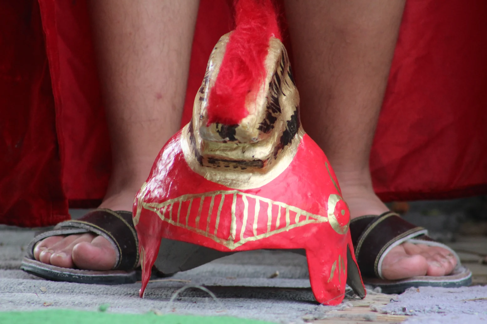
Cada año, durante la Semana Santa, los habitantes del Barrio de Tierras Negras en Celaya representan la Pasión de Cristo como una tradición comunitaria que mezcla fe, cultura e identidad local.
Las siguientes imágenes documentan distintos momentos de la representación de la Pasión de Cristo realizada en el Barrio de Tierras Negras. Cada fotografía registra instantes del recorrido, la participación de los actores y la presencia de la comunidad que acompaña esta tradición.
Haz clic en una imagen para verla en grande.
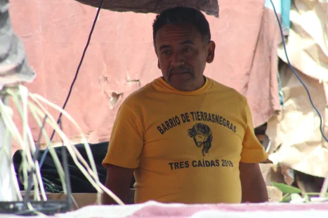
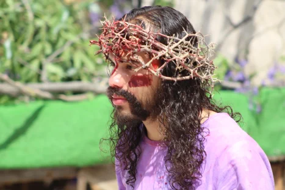
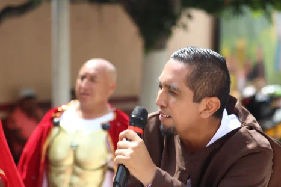
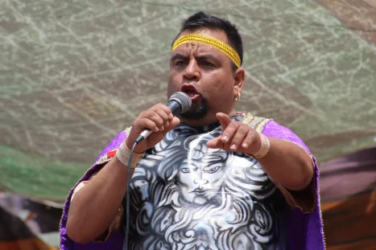
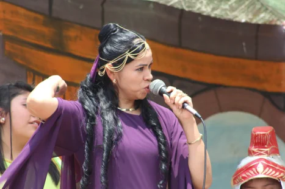
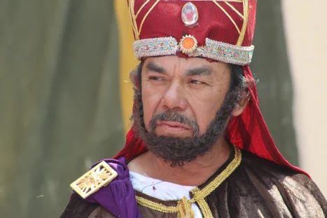
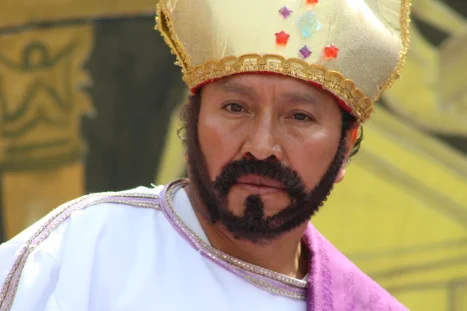
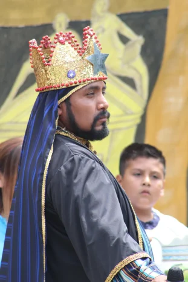
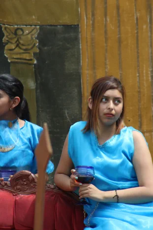
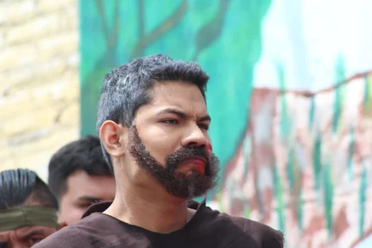
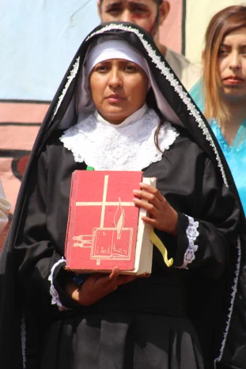
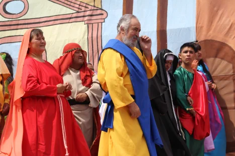
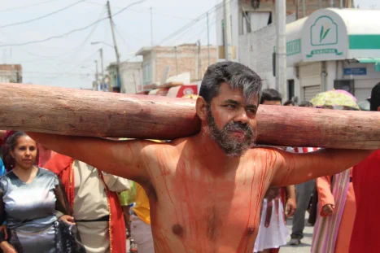
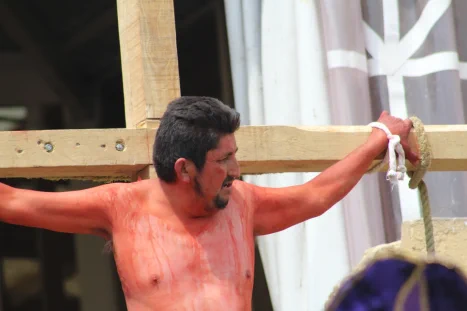
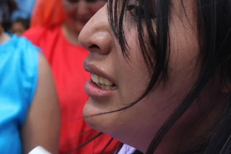
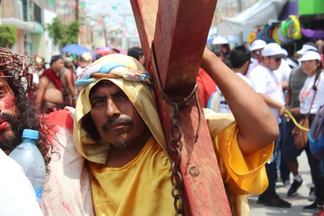
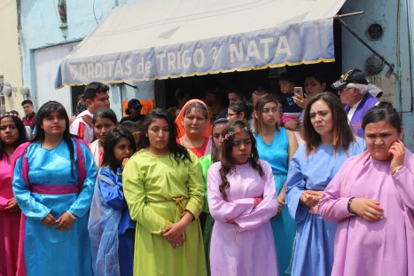
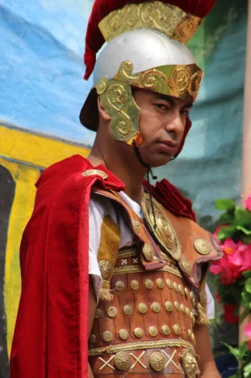
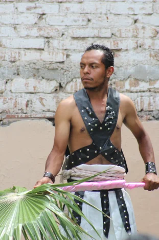
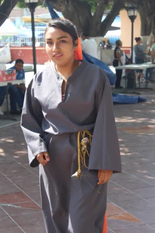
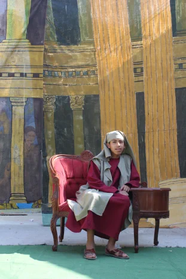
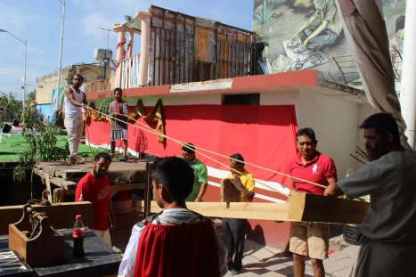
Evento:
Representación de la Pasión de Cristo
Ubicación:
Barrio de Tierras Negras
Celaya, Guanajuato, México
Temporalidad:
Celebraciones de Semana Santa
Participación:
Habitantes y vecinos de la comunidad
La representación de la Pasión de Cristo en el Barrio de Tierras Negras no es únicamente una escenificación religiosa. Se trata de una tradición comunitaria que ha sido transmitida de generación en generación y que forma parte de la identidad cultural del barrio.
Cada participante, actor o espectador, contribuye a mantener viva una práctica que combina fe, memoria colectiva y expresión cultural. Este proyecto busca documentar y compartir esa tradición con nuevas generaciones.
Se agradece la colaboración de las personas y participantes de la representación de la Pasión de Cristo en el Barrio de Tierras Negras, quienes mantienen viva esta tradición comunitaria y permitieron documentar algunos de sus momentos a través de la fotografía.
Fotografía: Luis Enrique Ferro Vidal
Investigación antropológica
Barrio de Tierras Negras
Museo de Celaya
Universidad de Guanajuato